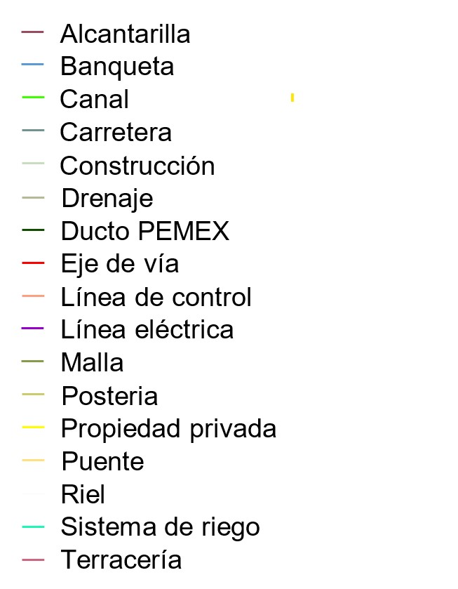
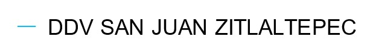
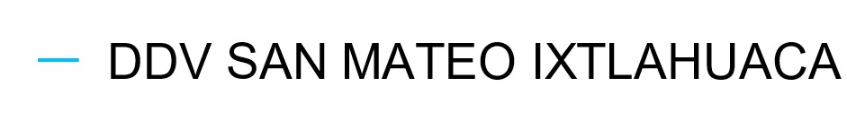

DIRECCIÓN GENERAL DE CATASTRO Y ASISTENCIA TÉCNICA - DIRECCIÓN TÉCNICA - COORDINACIÓN DE DESARROLLO E IMPLEMENTACIÓN DEL USO DE SIG
Capas
División Política
Límite Estatal
Propiedad Social
Afectaciones
Perimetrales
Parcelas
Propiedad Privada
Bloque-PP
Supu-PP
Cotas
Cotas Cada Km
Infraestructura
Infraestructura

Derecho de Vía
Acayuca
Agua Azul
Coyotepec
El Muerto Ignacio Pérez
El Rosario
El Saucillo
El Sauz
Jagüey De Tellez
Los Álvarez
Melchor Ocampo
Mogotes
Navajas
N.C.P.A. Chacón
Pachuquilla
Pedro Escobedo
Presa Del Rey
San Clemente
San Ildefonso
San Juan Zitlaltepec

San Mateo Ixtlahuaca

Santa Ana Nextlalpan
San Pedro Tlaquilpan
Santa Barbára
Santa Cruz y Sus Barrios
Temascalapa
Tepeji Del Río
Tizayuca
Viborillas
Derecho de Vía
➡️